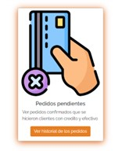
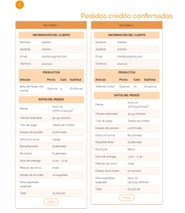
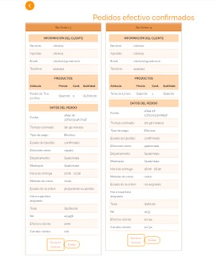
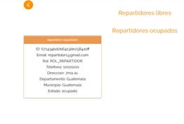
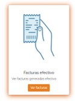
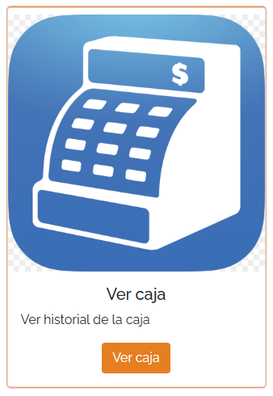
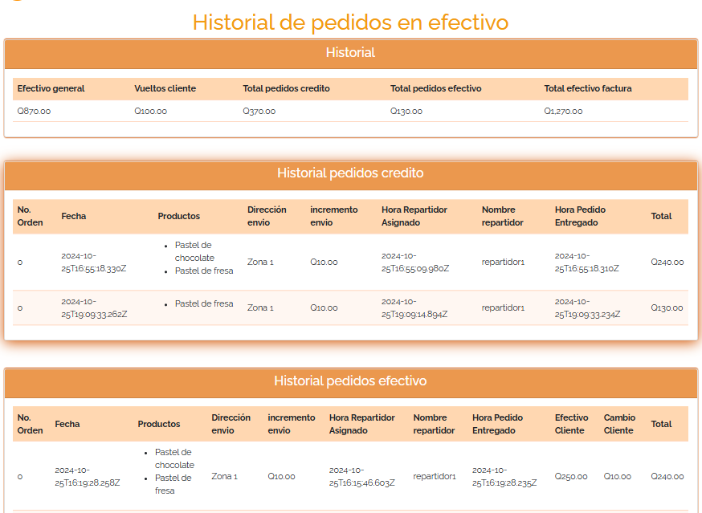

1. Pedidos Pendientes
En esta sección se muestran los pedidos confirmados realizados por los clientes que han seleccionado como método de pago crédito o efectivo.
2. Pedidos Confirmados con Tarjeta de Crédito
Permite visualizar los pedidos confirmados que han sido pagados por los clientes utilizando tarjeta de crédito.
3. Pedidos Confirmados con Efectivo
Esta opción permite ver los pedidos confirmados que han sido pagados en efectivo, pero cuyo pago aún no ha sido verificado.
4. Gestión de Repartidores
En esta sección puedes administrar los repartidores, asignarles pedidos y confirmar la entrega de los mismos.
5. Historial de Facturas en Efectivo
Aquí puedes consultar un historial completo de las facturas generadas por pagos en efectivo.
6. Visualización de Caja
Esta funcionalidad te permite acceder al historial de movimientos de caja de la sucursal.
 